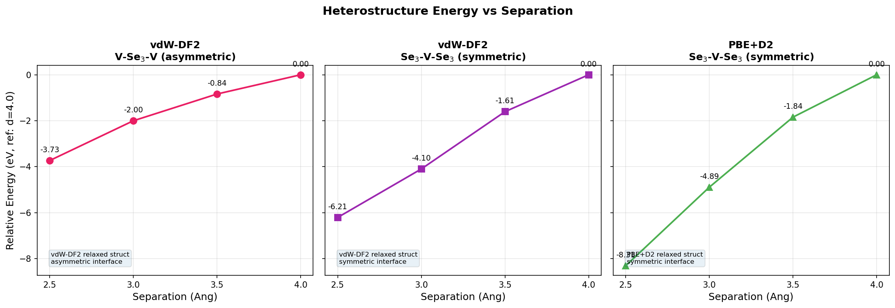
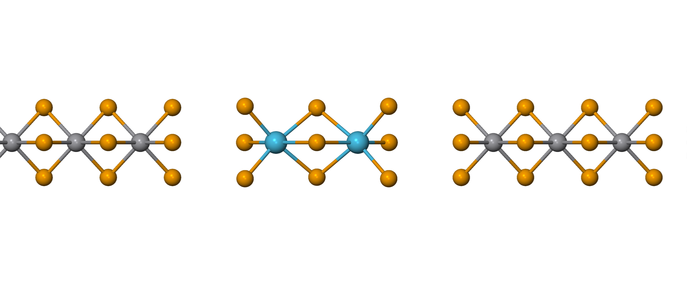
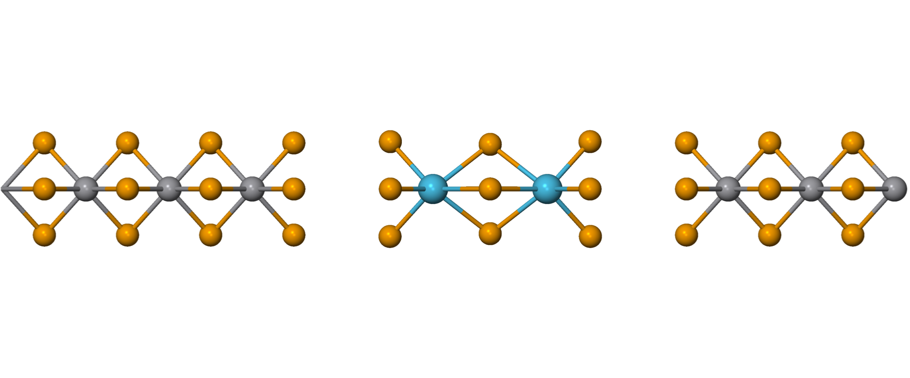

VSe₃–Hf₂Se₉ heterostructure separation 테스트
목표
VSe₃(3uc)–Hf₂Se₉–VSe₃(3uc) heterojunction에서 VSe₃–Hf₂Se₉ 계면 separation d (2.5–4.0 Å)에 대한 함수로 single-point 에너지를 계산해, 평형 계면 거리를 찾고 DFT가 실험에서 관측된 ~3.5 Å 최소점을 재현하는지 확인한다.
방법
세 가지 버전을 계산했다. 구조가 서로 다르므로 버전 간 total energy를 직접 비교할 수는 없고, 각 버전 내부의 에너지 추세만 비교하며, 버전별 기준은 d = 4.0 Å로 둔다.
| 버전 | Functional | 구조 출처 | 계면 배치 |
|---|---|---|---|
| 07-hetero | vdW-DF2 | vdW-DF2 relaxed | V-Se₃-V (비대칭) |
| 08-hetero-v2 | vdW-DF2 | 07과 동일, Se끼리 마주보게 뒤집음 | Se₃-V-Se₃ (대칭) |
| 09-hetero-d2 | PBE+D2 | PBE+D2 relaxed | Se₃-V-Se₃ (대칭) |
- 07 vs 08: 같은 functional, 같은 구조 — 계면 배치만 다름 (V-facing vs Se-facing). Total energy를 직접 비교할 수 있다.
- 07/08 vs 09: functional과 relaxed 구조가 둘 다 다름 — total energy를 직접 비교할 수 없다.
결과
세 버전 모두 2.5–4.0 Å 구간에서 단조 감소한다 — scan 범위 안에 최소점 없음.
| d (Å) | 07 vdW-DF2 V-Se₃-V (eV) | 08 vdW-DF2 Se₃-V-Se₃ (eV) | 09 PBE+D2 Se₃-V-Se₃ (eV) |
|---|---|---|---|
| 2.5 | −3.73 | −6.21 | −8.31 |
| 3.0 | −2.00 | −4.10 | −4.89 |
| 3.5 | −0.84 | −1.61 | −1.84 |
| 4.0 | 0.00 | 0.00 | 0.00 |




논의
- 세 버전 모두 d = 2.5 Å에서도 계속 감소한다 — 2.5–4.0 Å 안에서 최소점을 찾지 못함.
- 07 vs 08 (같은 functional, 계면만 다름): Se–Se 대칭 배치(08)가 V-facing(07)보다 기울기가 가파르고, d = 4.0 Å에서 total energy가 0.60 eV 더 낮다 — 즉 Se–Se 계면이 더 강하게 결합한다.
- 09 (PBE+D2)는 functional과 relaxed 구조가 둘 다 달라 07/08과 직접 비교할 수 없다.
이 단조 거동이 dangling-bond 가설과 H-termination 테스트(H termination 참조)를 유발했으며, VSe₃ 계면 Se를 passivation하면 d ≈ 3.5 Å 부근에서 최소점이 복원된다.